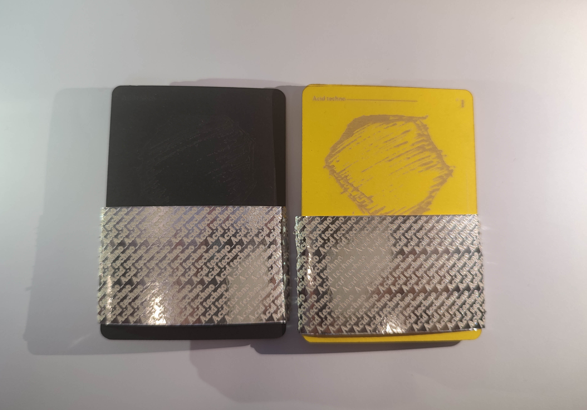

Mémoire
3e année DN MADe Graphisme
Consultable ICI
Ce mémoire traite du lien entre les formes et les sons, à travers le bricolage numérique. J’ai choisi ce sujet car musique et nouvelles technologies, pour moi se complètent et évoluent en relation l’un avec l’autre. Ainsi, nous verrons comment passer de la forme sonore à quelque chose de plus complexe, à l’aide d’outils numériques. Le terme «bricolage numérique» recouvre toutes les manipulations numériques possibles, au cours du processus de fabrication. Tout d’abord, nous tenterons de comprendre comment une image ou une forme peut être produite à partir d’un son et inversement, et comment les outils numériques accentuent et compliquent leur interaction. Ensuite, nous interrogerons la place du public / spectateur, (celui qui voit cette interaction) qui devient l’acteur de cette interaction. Et comment, en s’imprégnant, ils peuvent transformer le simple dialogue entre sons et formes en une véritable expérience audiovisuelle. Enfin, nous pourrons nous rendre compte que l’immersion de l’utilisateur peut devenir le point de départ de l’interaction entre le son et la forme.
Format : Numérique
Langages : HTML / CSS / JavaScript


1_Bricolage En quête de cheminement plutôt que d’un résultat (test, exploration...)
Brut de formes
Il s’agit, à travers l’album Brut de Forge de l’artiste musical Jérémy Reynaud, de concevoir une installation immersive prenant place aux Docks de Cahors. Une projection en vidéo mapping, intervenant sur toutes les surfaces de la petite salle Le Docks’side, vient illustrer les sons abstraits et expérimentaux de l’artiste. À cela sont connectés différents capteurs permettant de retranscrire numériquement les gestes du public, lui donnant ainsi le pouvoir de modifier cet environnement visuel. Le but est de sensibiliser le public à une approche différente des nouvelles technologies, dans cette société où nous sommes de plus en plus régis par celle-ci, en le faisant passer de spectateur à acteur dans cette interaction sons_formes. Comment mettre en place un environnement visuel façonné par, mais non-dépendant, de la participation des spectateurs ? Notre comportement avec le numérique est de plus en plus standardisé, que ce soit dans notre quotidien avec des smartphones qui ne demandent qu’à swiper, ou au bureau avec des ordinateurs avec lesquels la communication ne passe que par la souris et le clavier. La simplification et la démocratisation des supports et outils numériques, ont entraîné une réduction de ses moyens de communication au point de les rendre automatiques pour l’homme. Ces codes de la gestuelle informatique se sont simplifiés, au regard des interfaces graphiques devenant toujours plus épurées et efficaces, afin que l’utilisateur soit guidé par les algorithmes, lui faisant ainsi prendre une place de spectateur. Comment peux donc évoluer notre relation avec les interfaces numériques ? L’utilisation d’un univers graphique mélangeant formes et sons permet une meilleure immersion du spectateur, en stimulant ses sens. C’est la musique qui donne le ton à l’installation, invitant au voyage imaginaire, à la danse, ou au mouvement en général, elle est instructive quant à la posture à adopter au sein de cette expérience. Les visuels, réagissant en symbiose au son, puis au gestes, génèrent un paysage graphique retranscrivant l’univers développé par Jérémy dans cet album. Un environnement visuel aux formes brutales et aux images travaillées, retravaillées, saturées par les interventions de l’homme, nous transporte au sein de sa forge électronique. Induisant vers une forme d’atelier numérique, composée d’éclats et d’étincelles, la matière visuelle en fusion nous dresse un décor malléable et incandescent. Créant un monde riche et onirique dans lequel notre relation aux événements est à la fois immédiatement perçue et ressentie.
Communication de l'événement
Une fois l'installation mise en place, il m'a fallu développer un support de communication. L'idée de réaliser un petit catalogue d'exposition sous la forme d'un dépliant, me permet d'intégrer l'affiche de l'événement sur le même objet éditorial. Mais le principal problème auquel j'ai été confronté était : comment rendre lisible un support de communication papier dans l'obscurité. Grâce à la risographie, il est possible d'imprimer des couleurs fluorescentes sur un papier fin. Cela m'a permis, à l'aide d'une lumière noire, de faire ressortir les écritures par rapport au fond.


Projet personnel
3e année DN MADe Graphisme
Les expérimentations menées à la suite de mon mémoire m’ont permis de mettre en place des dispositifs techniques et des procédés graphiques, afin d’instaurer une interaction entre sons, formes et spectateurs.
Dans un premier temps, j’ai étudié la mise en place d’un dispositif invitant le spectateur à l’interaction. L’installation comprend une carte Arduino, un Raspberry Pi, ainsi qu’un vidéoprojecteur. L’usager est invité à interagir avec un différents capteurs (de mouvement ou lumineux, placé sur la carte Arduino). Ces actions vont perturber, s'ajouter à l'interaction son - formes dejà en place.
Dans un second temps, j’ai cherché des manières différentes d’illustrer graphiquement une musique. Avec le bricolage1 comme point de départ,je me suis beaucoup intéressé au travail
de Norman McLaren et Len Lye, notamment autour de la conception de formes graphiques animées qui réagissent au son, à l’aide de bobines de pellicules.Il est possible d’utiliser tous types de médiums pour créer des motifs variés et originaux. En grattant et dessinant sur les pellicules comprenant déjà des images, une superposition est ainsi créée, un contraste formel et chromatique entre ces images de dessin animé et ces nouvelles formes brutes est identifiable.
Une fois terminé, projeté puis refilmé, j’ai samplé le film afin de composer un clip pour chaque musique, proposant une traduction littéral de celle-ci.L’utilisation de films Disney comme matière première, est selon moi en adéquation parfaite avec l’univers musical à illustrer. Le détournement de figures emblématiques du dessin animé, permet d’attirer l’œil du spectateur avec des personnages familiers. De plus, une fois associées à un son électronique, ces images évoquent une hybridation des pratique, ancrant les visuels dans un espace imaginaire qui leur sont propre. L’épisode utilisé ici met en scène ces célèbres canards dans l’esprit d’halloween, nous immerge dans un univers à la fois drôle et sombre.L’objectif est de mettre en lien ces nouvelles formes visuelles avec le dispositif étudié plus haut.
Format : Installation / Numérique
Outils : Raspberry Pi / Arduino / Processing / TouchDesigner


Atelier #1
1e année DSAA Design Graphique
Développer un système graphique pour parler d'un style musical. Ces cartes expliquent le role des differents composants de l'acid techno, musique peu connu du grand publique malgré sont anciennetée. Chaques son a été assicié à une forme, le rendant reconnaissable en lui donnant une image.
Format : 630 x 890mm
Outils : Illustrator / Gravure laser



Rapport de stage
3e année DN MADe Graphisme
Rapport de mon stage d'une durée de deux mois, effectué à l'agence Fertil Ink au sein de la Grand Usine Créative de Saint-Étienne, où j'ai pu découvrir les rudiments de la production audiovisuelle. Mes principales missions ont été d'assister Julien (mon maître de stage) dans la mise en place du matériel pour les tournages, mais aussi la création de visuels et l'animation de personnages.
Format : 200 x 250mm
Papiers : Couché 100g / Calque 70g


Identité visuelle
2e année BTS Design Graphique
Le label Hammerbass record & promotion, fondé en 1997 par le collectif DUB ACTION, est l’un des premier label français à promouvoir la culture dub. Étant en perte de vente et d’artiste ces dernier temps, il souhaite actualiser leur image afin d’acquérir plus de visibilité pour promouvoir au mieux les artistes et la culture qu’il représente ou a pu représenter. Mon objectif est d’augmenter la notoriété de Hammerbass, redorer son image en mettant mieux en avant ses valeurs, proposer une communication plus adapter aux nouvelles technologies et faire découvrir ou redécouvrir mon client sous un nouvel angle. Pour cela, la refonte de son identité est nécessaire, puis, celle du site web.
Format : Numérique
Outils : Illustrator / Photoshop


Application Mobile
2e année BTS Design Graphique
Ouvert toute l’année et à tous les publics, le Centre international d’art et du paysage est un lieu d’art à échelle humaine. Situé sur l’île de Vassivière, elle n’est qu’en apparence naturelle. Paysage pensé et façonné par l’homme, l’île est devenue depuis les années 1980 un territoire de rencontre entre la nature et la sculpture. Ce centre d’art consacré à la création contemporaine, à l’expérimentation, à la production, questionne une perception du paysage que l’exploitation des ressources, l’aménagement des territoires et les inventions citoyennes transforment en profondeur. Amateur d’Art ou visiteur lambda, tout le monde peut venir visiter l’île et découvrir les œuvres le long des différents circuits. Or, il n’y a pas, ou peu d’informations pour le moment sur les chemins. Pourtant, une œuvre d’art contemporain a souvent besoin de support afin d’expliquer son contenu, son contexte de création et les concepts en jeu. Mon rôle a donc été de créer une application afin d’affiner la médiation du lieu et des œuvres.
Format : Numérique
Outils : 3DS Max / Photoshop

Identitée visuelle
3e année DN MADe Graphisme
Lors d'un workshop d'une semaine avec les Docks de Cahors, nous avons du (en groupe) leur proposer une solution d'identitée visuelle.
Les Docks de Cahors sont un espace de vie et de partage où se croisent scène de musiques actuelles, graff park et skatepark. Lieu chargé d'histoire en perpetuelle évolution, mutation, transformation, nous avons voulu mettre en avant cela dans notre proposition.
Seconde session de workshop à venir...


Identitée visuelle
2e année BTS Design Graphique
Lors d'un coworking avec l'agence Euré-k, nous avons (en groupe) réalisé l'identité visuelle d'une nouvelle gamme de tartinade. La marque "Les fins gourmets" nous a laissé la liberté de trouver le nom de cette gamme, et développerr l'identité autour de celle-ci.
Format : Numérique / Imprimé
Outils : After Effect / Illustrator / Photoshop / InDesign


Typographie modulaire
2e année BTS Design Graphique
Conception d’une typographie modulaire à l’aide de formes géométriques simples. Facette est une police qui peut illustrer plusieurs ambiances en arborant différentes couleurs. Les caractères sont pensés comme en trois dimensions, ou la lumière viendrait les éclairer par en haut a droite. Une fois la typographie conçu, elle devait être mise en application sur la pochette d’album d’un artiste.
Format : Numérique
Outils : Illustrator / Photoshop


Atelier photo : Répétition
2e année BTS Design Graphique
La répétition est partout et nul part à la fois dans l’art, devant être unique pour être considéré comme tel, l’artiste développe pourtant son style en répétant les formes qu’il crée ou les couleurs qu’il exploite, ce qui est assez paradoxal. Le terme de répétition constituera le fil conducteur de mes productions. Par le biais de différentes techniques de photomontage traditionnel (à l’aide de miroirs par exemple) ou numérique (découpage, recomposition, simplification, multiplication, reproduction...), j’ai créé une série d'images graphiques illustrant le répétition à travers le motif ou le fractal, faisant perdre le sens du sujet photographié.
Format : Numérique
Outils : Appareil photo objectif 50mm / Miroirs / Lightroom / Photoshop


Stay Home, Stay Positive
Projet personnel entre BTS et DN MADe
Courte animation 3D réalisée dans le cadre d’un projet collectif, visant à encourager les créations graphique tout en remerciant le personnel soignant (pour le compte Instagram Stayhomestaypositive).
Format : Numérique
Outils : 3DS Max / Photoshop / After Effect


Formats : Papiers à dessin divers / Panneaux en bois avec apprêt blanc
Outils : Crayon / Peinture à l'huile